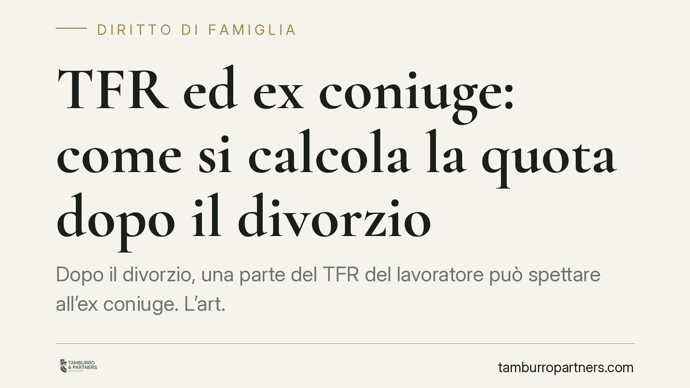

TFR ed ex coniuge: come si calcola la quota dopo il divorzio
Dopo il divorzio, una parte del TFR del lavoratore può spettare all'ex coniuge. L'art. 12-bis della legge sul divorzio riconosce una quota pari al 40% dell'indennità riferibile agli anni di matrimonio, ma solo in presenza di precisi presupposti. Chiarire regole, base di calcolo e limiti temporali evita richieste infondate e contestazioni in sede di liquidazione.

Il fatto
Quando un rapporto di lavoro dipendente si conclude, matura il TFR (trattamento di fine rapporto): una somma accantonata anno per anno dal datore di lavoro e liquidata al termine del rapporto. Se il lavoratore ha alle spalle un divorzio, parte di questa somma può essere dovuta all'ex coniuge.
Non si tratta di una scelta discrezionale del giudice, ma di un diritto previsto dalla legge, subordinato però a condizioni rigorose che spesso vengono fraintese.
Inquadramento normativo
La fonte è l'art. 12-bis della legge 1° dicembre 1970, n. 898 (legge sul divorzio), introdotto dalla riforma del 1987. La norma stabilisce che il coniuge titolare dell'assegno divorzile, se non passato a nuove nozze, ha diritto a una percentuale dell'indennità di fine rapporto percepita dall'altro coniuge all'atto della cessazione del lavoro, "anche se l'indennità viene a maturare dopo la sentenza".
La percentuale è fissata dalla legge nel 40% e va riferita agli anni in cui il rapporto di lavoro è coinciso con il matrimonio. L'orientamento della Corte di Cassazione è consolidato nel ritenere che il diritto abbia natura autonoma e che la base di computo sia l'indennità maturata nel periodo di durata del matrimonio.
I presupposti
Il diritto sorge solo se ricorrono, congiuntamente, tre condizioni:
- Titolarità dell'assegno divorzile. Chi non percepisce l'assegno di divorzio non ha diritto ad alcuna quota del TFR. È il presupposto centrale.
- Assenza di nuove nozze. Se l'ex coniuge si è risposato, il diritto viene meno.
- Percezione del TFR dopo la domanda di divorzio. Il diritto riguarda l'indennità percepita dall'altro coniuge dopo la proposizione della domanda di divorzio, anche se la liquidazione avviene in un momento successivo alla sentenza. Il TFR già incassato e speso prima di quel momento resta fuori dal perimetro della norma.
Come si calcola la quota
Il meccanismo è più semplice di quanto si creda, ma va applicato con precisione.
Si individua anzitutto la parte di TFR riferibile agli anni di matrimonio, cioè agli anni in cui il rapporto di lavoro si è sovrapposto alla vita coniugale. Su questa porzione si applica il 40%.
Un esempio. Il lavoratore matura complessivamente 60.000 euro di TFR nel corso della propria carriera. Se, di questi, 30.000 euro sono riferibili agli anni in cui il rapporto di lavoro è coinciso con il matrimonio, la quota dell'ex coniuge sarà pari al 40% di 30.000, cioè 12.000 euro.
Due precisazioni importanti, spesso oggetto di errore.
Il profilo fiscale non è una "riduzione della base di calcolo". La quota che affluisce all'ex coniuge è soggetta a tassazione separata in capo a chi la riceve, secondo il regime proprio del TFR. Non si tratta quindi di calcolare il 40% "sul netto": la percentuale si applica all'indennità di competenza del periodo matrimoniale, e la tassazione opera come momento distinto, sul beneficiario.
Gli anticipi non vanno automaticamente esclusi. Contrariamente a una convinzione diffusa, la giurisprudenza tende a includere nella base di computo anche il TFR maturato in costanza di matrimonio ancorché già anticipato al lavoratore. L'eventuale rilevanza degli anticipi va valutata caso per caso e non costituisce una causa generale di esclusione.
Implicazioni pratiche
Per l'ex coniuge titolare dell'assegno, il diritto rappresenta una posta patrimoniale spesso significativa, ma non attivabile in automatico: presuppone che il TFR sia effettivamente percepito dall'altro coniuge dopo la domanda di divorzio.
Per il lavoratore, il rischio è quello di liquidare o utilizzare l'intero TFR senza considerare la quota potenzialmente dovuta, esponendosi a una richiesta successiva.
Per entrambi, la determinazione esatta della porzione riferibile al periodo matrimoniale è il punto più delicato e la principale fonte di contenzioso.
Cosa fare in concreto
- Verificare la titolarità dell'assegno divorzile: senza assegno riconosciuto, il diritto non sorge.
- Accertare la data di cessazione del rapporto di lavoro e il momento di effettiva percezione del TFR, per collocarlo rispetto alla domanda di divorzio.
- Ricostruire gli anni di sovrapposizione tra rapporto di lavoro e matrimonio: è il dato su cui si calcola la quota.
- Richiedere al datore di lavoro il conteggio analitico del TFR maturato, distinto per periodi.
- Considerare il regime di tassazione separata applicabile alla somma percepita, per stimare l'importo netto effettivo.
È opportuno formalizzare la richiesta per iscritto e documentare ogni elemento di calcolo, così da prevenire contestazioni sulla base di computo.
Disclaimer
Contributo informativo a cura di Tamburro & Partners - Avv. Giuseppe Tamburro. Non costituisce parere legale.
Ogni famiglia ha il suo equilibrio.
Separazione, divorzio, affidamento, assegno: se vuoi un confronto riservato su una specifica situazione, scrivi allo studio. Ti rispondiamo entro un giorno lavorativo.